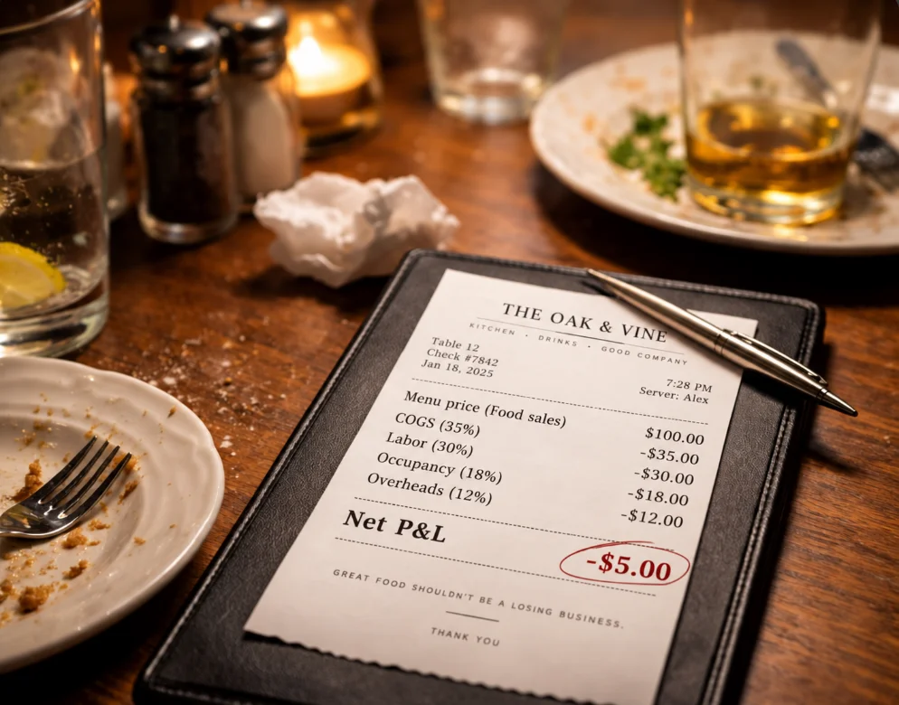

01 · Rethink
Concept & strategy
Positioning, menu architecture, pricing and the guest journey — questioned from first principles before anything is rebuilt.
Hospitality advisory · UAE
Re. works alongside owners and operators to rethink concepts, rebuild operations and make restaurants perform — on the floor, in the kitchen and on the P&L.
Rethink · Rebuild · Perform
Every engagement ends with a number, not an opinion.
01 — 03
01 · Rethink
Positioning, menu architecture, pricing and the guest journey — questioned from first principles before anything is rebuilt.
02 · Rebuild
Kitchen flow, standards, procurement and rosters, then the training that makes them hold once we leave the building.
03 · Perform
Covers, spend per head, food and labour cost against target — reported weekly, so progress is measured, not described.
Services
Engagements are scoped to one venue or a whole group, and always start with a diagnostic.
Discuss a project01
Positioning, format, menu architecture and the guest journey for a new venue or a tired one.
02
Every dish costed to the gram, priced from the cheque backwards, and engineered for what actually sells.
03
Workflow, standards, procurement and rosters reviewed on site — with a fix list ranked by impact.
04
Critical path, hiring, training and soft-launch cadence so opening week is a rehearsal, not a rescue.
05
For venues that used to work. A ten-week diagnostic-to-implementation programme with weekly numbers.
06
P&L, covers and spend-per-head models, break-even and ROI — built to the operator's week, not the accountant's year.
How we work
We walk the floor, sit in the kitchen and read the last twelve months. Menu engineering, workflow audit, purchasing and labour against covers.
Revised menus with recipe costings, a pricing architecture, standard operating procedures and the training plan to carry them.
Coaching on the floor and in the kitchen, a weekly budget-versus-actual, and a hand-over of dashboards your team runs without us.
People, Planet & Safety
Built into every engagement, or taken on as standalone work.
HACCP-based systems, temperature and allergen controls, cleaning schedules and records — set up so the team runs them without a consultant present.
Unannounced kitchen and floor audits scored against municipal requirements and your own standard, with a ranked fix list and a re-audit date.
Waste mapping from purchase to plate, sourcing and energy reviewed as cost lines first — measured monthly alongside food cost.
About
Co-Founder & Managing Director
Charbel brings over 20 years of hospitality and operational leadership across the UAE, Saudi Arabia and Lebanon. He has led multi-site restaurant groups, new openings, turnarounds and high-profile hospitality projects, with a focus on strategy, operations, commercial performance and guest experience.
At Re., he combines hands-on operating experience with a structured advisory approach — so recommendations are ones he has already had to make work himself.
Insights · Featured
Cost-plus pricing protects margin on paper and loses it on the floor. A note on building the menu from the guest's cheque backwards.

Contact
Leave your details and we'll come back within two working days. Prefer to go deeper first? The intake takes four minutes.
Start the intake Charbel@re-agency.meCharbel replies within two working days — usually with a question or two of his own.